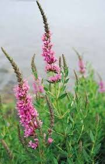

Lythraceae
Loosestrife Family
Lythraceae, the loosestrife family, is a diverse family of flowering plants in the order Myrtales. It includes herbs, shrubs, and trees found worldwide, with the greatest diversity in the tropics. Members often inhabit wetlands and moist environments, but also occur in drier habitats. Notable members include loosestrifes (Lythrum), crape myrtles (Lagerstroemia), henna (Lawsonia), pomegranates (Punica), and mangrove apples (Sonneratia).
Overview
Lythraceae is a moderately large family with about 30 genera and around 600-650 species. It has a cosmopolitan distribution but is most diverse in tropical regions, particularly South America and Africa. The family exhibits remarkable diversity in growth form, ranging from small annual herbs (e.g., Rotala, Ammannia) and wetland perennials (Lythrum) to shrubs (Cuphea, Heimia) and large trees (Lagerstroemia, Sonneratia). It even includes mangrove species (Sonneratia).
A key feature uniting the family is the presence of a distinct hypanthium, a floral tube formed by the fusion of the bases of the sepals, petals, and stamens, upon which the floral parts are inserted. Petals, when present, are often distinctively crumpled in bud. Many species are associated with wet habitats like marshes, riverbanks, and temporary pools. Economically important members include crape myrtles (ornamental trees/shrubs), pomegranate (fruit), and henna (dye). However, some species like purple loosestrife (Lythrum salicaria) have become problematic invasive weeds in wetlands outside their native range.
Quick Facts
- Scientific Name: Lythraceae
- Common Name: Loosestrife Family
- Number of Genera: Approximately 30
- Number of Species: Approximately 600-650
- Distribution: Cosmopolitan, greatest diversity in tropics.
- Habit: Herbs, shrubs, trees; often in wet habitats, includes mangroves.
- Evolutionary Group: Eudicots - Rosids (Malvids) - Myrtales
Key Characteristics
Growth Form and Habit
Highly variable: annual or perennial herbs (often with square stems), shrubs, and trees. Includes aquatic species and mangrove trees (Sonneratia). Stems can be smooth or winged.
Leaves
Leaves are usually opposite, but sometimes whorled or alternate. They are typically simple with entire (smooth) margins. Stipules are generally small and inconspicuous or absent.
Inflorescence
Inflorescences are diverse, ranging from solitary flowers in leaf axils to complex cymes, racemes, or panicles.
Flowers
Flowers are usually actinomorphic (radially symmetrical), though sometimes slightly zygomorphic (Cuphea), bisexual, and typically 4-, 6-, or 8-merous. A prominent floral tube, the hypanthium, is characteristic.
- Hypanthium: A tubular structure formed from the fused bases of sepals, petals, and stamens, ranging from short to long and cylindrical.
- Calyx: Consists of 4, 6, or 8 sepals, typically triangular or lobe-like, attached to the rim of the hypanthium. Often, small appendages called epicalyx lobes are present in the sinuses between the sepals.
- Corolla: Consists of 4, 6, or 8 petals (sometimes absent), which are free and inserted on the inner rim of the hypanthium, alternating with the sepals. Petals are characteristically crumpled in bud and appear wrinkled or crepe-like upon opening. Colors vary widely (purple, pink, red, white, yellow).
- Androecium: Stamens are usually twice as many as the petals (e.g., 8, 12, 16) or sometimes numerous (e.g., Lagerstroemia, Punica). They are inserted inside the hypanthium, often at different levels, and filaments may be of unequal lengths. Anthers are typically versatile (attached near the middle and able to swivel).
- Gynoecium: The ovary is usually superior (rarely half-inferior or inferior in Sonneratia), located within the base of the hypanthium but generally free from it. It is composed of 2-6 (or more) fused carpels, forming an equal number of locules with numerous ovules on an axile placenta. A single slender style arises from the ovary, topped by a usually small, capitate (head-like) stigma. Heterostyly (distinct flower morphs with different style and stamen lengths) is common in genera like Lythrum and Decodon.
Fruits and Seeds
The most common fruit type is a dry, dehiscent capsule, which typically splits septicidally or opens irregularly. The capsule is usually enclosed by or seated within the persistent hypanthium and calyx. Some genera have fleshy fruits, such as the berry of pomegranate (Punica) and mangrove apple (Sonneratia). Seeds are generally numerous and small, sometimes winged.
Chemical Characteristics
Many species contain tannins. The dye molecule lawsone is characteristic of henna (Lawsonia inermis).
Field Identification
Identifying Lythraceae involves recognizing the characteristic floral structure, leaf arrangement, and often habitat preferences:
Primary Identification Features
- Presence of Hypanthium: Look for the distinct floral tube below the sepals and petals.
- Opposite Leaves (usually): Check for leaves arranged in pairs along the stem. Herbaceous species often have square stems.
- Crumpled Petals: Petals (if present) often appear wrinkled or crepe-like, especially noticeable as they emerge from the bud.
- Epicalyx Lobes: Small appendages are often visible alternating with the main calyx lobes on the hypanthium rim.
- Stamens Inserted Inside Hypanthium: Stamens arise from the inner surface of the floral tube, not directly from the base. Often twice the number of petals or numerous.
- Superior Ovary (usually): Ovary located at the base of the hypanthium, usually free from its wall.
- Capsule Fruit (usually): Look for dry capsules enclosed within the persistent hypanthium/calyx.
- Habitat: Many species favor wet or moist environments.
Secondary Identification Features
- Simple, entire leaves: Leaves are typically undivided with smooth margins.
- Flower parts in 4s, 6s, or 8s: Count sepals, petals, and note stamen number relative to petals.
- Heterostyly: In some genera (Lythrum, Decodon), observe different flower forms with varying style and stamen lengths on different plants.
Seasonal Identification Tips
- Flowering Season: Varies widely from spring/summer for temperate herbs to year-round or seasonal flowering for tropical trees and shrubs. Flowers are key for identification.
- Fruiting Season: Persistent capsules within the hypanthium can aid identification after flowering. Berries of Punica and Sonneratia are distinctive when present.
- Vegetative Season: Opposite leaves and square stems (in herbs) are useful clues.
Common Confusion Points
Lythraceae can be confused with other families having floral tubes or opposite leaves:
- Onagraceae (Evening Primrose Family): Also in Myrtales, often has a hypanthium, but typically has an inferior ovary, flower parts usually in 4s, and stamens often equal or twice the number of petals but arising from the top of the hypanthium or ovary.
- Rubiaceae (Coffee Family): Has opposite leaves and often a floral tube, but always has an inferior ovary and prominent interpetiolar stipules.
- Lamiaceae (Mint Family): Often has opposite leaves and square stems, but flowers are strongly zygomorphic (bilaterally symmetrical) with a different structure (usually 2-lipped corolla, 4 or 2 stamens), and fruit consists of 4 nutlets.
- Rosaceae (Rose Family): Some members (e.g., Prunus, Rosa) have a hypanthium, but typically have numerous stamens, alternate leaves (usually), and often prominent stipules. Petals are not typically crumpled.
Field Guide Quick Reference
Look For:
- Distinct hypanthium (floral tube)
- Usually opposite leaves
- Square stems (herbaceous spp.)
- Crumpled petals (if present)
- Epicalyx lobes (often present)
- Stamens inserted inside hypanthium
- Usually superior ovary
- Fruit usually a capsule within persistent hypanthium
- Often in wet habitats
Key Variations:
- Habit (herb, shrub, tree, mangrove)
- Flower parts (4, 6, 8)
- Presence/absence of petals
- Stamen number (definite vs. numerous)
- Ovary position (sup. vs. inf. in Sonneratia)
- Fruit type (capsule vs. berry)
- Heterostyly
Notable Examples
This diverse family includes well-known ornamentals, food plants, dye sources, and wetland species:

Lagerstroemia indica & hybrids
Crape Myrtle
Widely cultivated ornamental shrubs and small trees native to Asia, prized for their showy, long-lasting panicles of flowers with distinctively crumpled petals (in pink, purple, red, white). They often have attractive, smooth, peeling bark.

Lythrum salicaria
Purple Loosestrife
A perennial herb native to Eurasia, known for its tall spikes of bright purple flowers. It thrives in wetlands and has become a highly invasive species in North America, outcompeting native vegetation. Exhibits tristyly (three floral morphs).

Punica granatum
Pomegranate
A shrub or small tree native to the region from Iran to northern India, cultivated for millennia for its fruit. The fruit is a unique berry (called a balausta) with numerous seeds surrounded by fleshy arils. Flowers are typically bright red-orange with crumpled petals and numerous stamens.

Cuphea spp.
Cigar Flowers, Waxweeds
A large genus (~260 species) of herbs and shrubs primarily from the Americas. Flowers are often tubular, sometimes slightly zygomorphic, and frequently red or purple. Cuphea ignea (Cigar Flower) has tubular red flowers tipped with black and white, resembling a lit cigar.

Sonneratia spp.
Mangrove Apple
A genus of mangrove trees found in coastal areas from East Africa through Southeast Asia to Australia and the western Pacific. They have pneumatophores (breathing roots) extending upwards from the mud. Flowers are often large, opening at night, with numerous stamens and an inferior or half-inferior ovary. The fruit is a fleshy berry.
Phylogeny and Classification
Lythraceae belongs to the order Myrtales, a major lineage within the Rosid clade (specifically the Malvids or Eurosids II group). This order includes other well-known families like Myrtaceae (eucalyptus and myrtles) and Onagraceae (evening primroses), often characterized by the presence of a hypanthium, opposite leaves, and certain anatomical features.
The circumscription of Lythraceae has expanded based on molecular data to include genera previously placed in separate families, such as Punicaceae (Punica), Sonneratiaceae (Sonneratia), and Trapaceae (Water Chestnut, Trapa - an aquatic herb). The inclusion of these diverse forms highlights the evolutionary radiation within the family. Relationships within Myrtales place Lythraceae sister to Onagraceae, with Combretaceae and Myrtaceae also being closely related.
Position in Plant Phylogeny
- Kingdom: Plantae
- Clade: Angiosperms (Flowering plants)
- Clade: Eudicots
- Clade: Rosids
- Clade: Malvids (Eurosids II)
- Order: Myrtales
- Family: Lythraceae
Evolutionary Significance
Lythraceae demonstrates significant evolutionary diversification:
- Habitat diversity: Shows adaptation to a wide range of habitats, from wetlands and aquatic environments (Lythrum, Rotala, Trapa) to mangroves (Sonneratia) and drier terrestrial habitats (Lagerstroemia, Punica).
- Floral evolution: Exhibits variation in flower symmetry (actinomorphic to zygomorphic), merosity (4-, 6-, 8-merous), petal presence/absence, stamen number, and breeding systems (including heterostyly).
- Hypanthium development: The prominent hypanthium is a key feature whose development and function vary across the family.
- Fruit evolution: Diversification from likely ancestral capsules to berries in genera like Punica and Sonneratia.
- Expanded circumscription: Incorporating former families like Punicaceae and Sonneratiaceae into Lythraceae reflects the power of molecular phylogenetics to reveal evolutionary relationships obscured by morphological divergence.